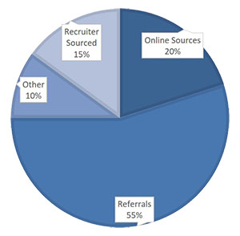

The U.S. unemployment rate has been on a steady decline since mid-2015 as the
economy recovered from the nearly 10-year recession. In February 2020, unemployment
was at 3.5%, the lowest rate in decades. It seemed if someone wanted a job, there
was one available. And then the Covid-19 pandemic hit the country.
How Are Jobs Sourced?
When I was working with job seeking clients, one of my first questions to them was,
“How do you think a majority of companies find employees in today’s
marketplace?”.

Overwhelmingly, the most common response was via the Internet. It makes sense, right?
Technology has taken over so much of our daily lives, why not talent management? But the
truth is, only about 20% of hires are sourced from online applicants. Each year, Silk
Road Recruiting does a
“Source of Hire” report. And each year, the number one source for
employee hires remains the some…employee referrals.
While applying online is still a valid method of acquiring
a position, being a “known candidate” is most effective. So, what does that mean
for job seekers? They need to be spending as much (or more) time developing and
interacting with their personal & professional network as they do filling out online
applications.